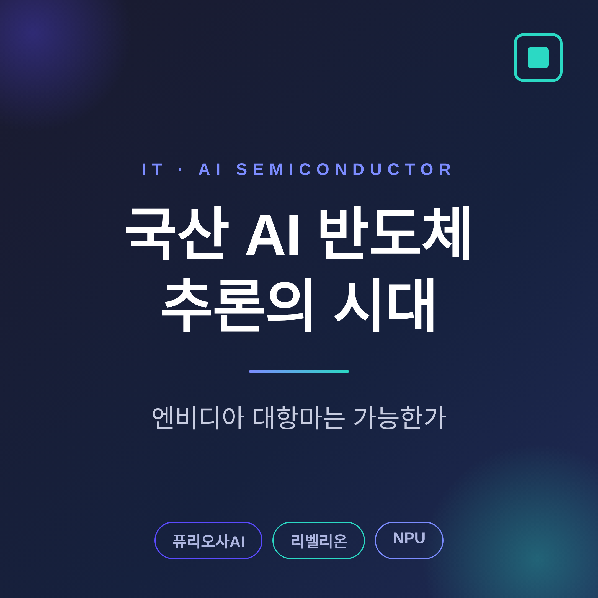
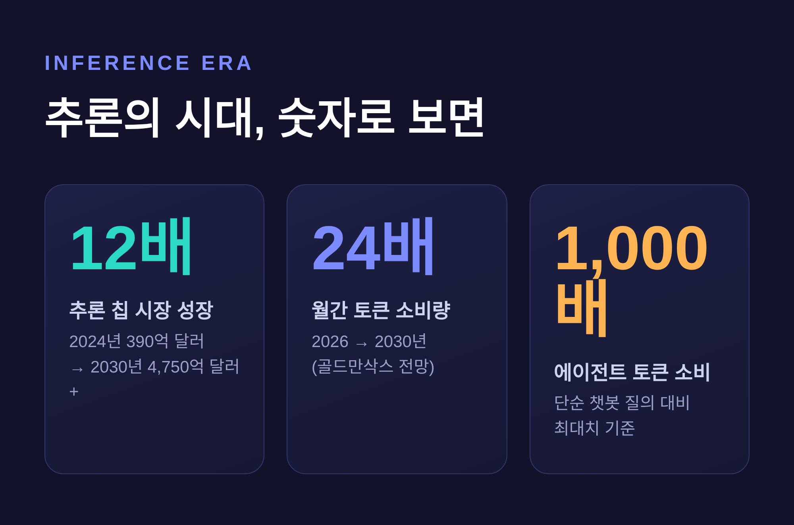
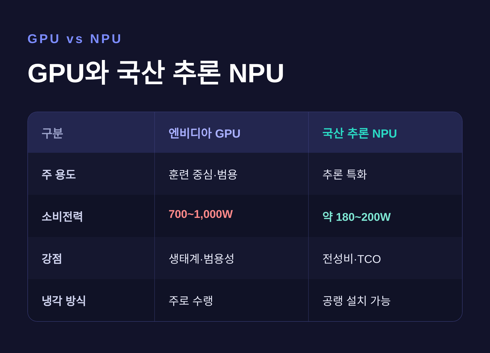
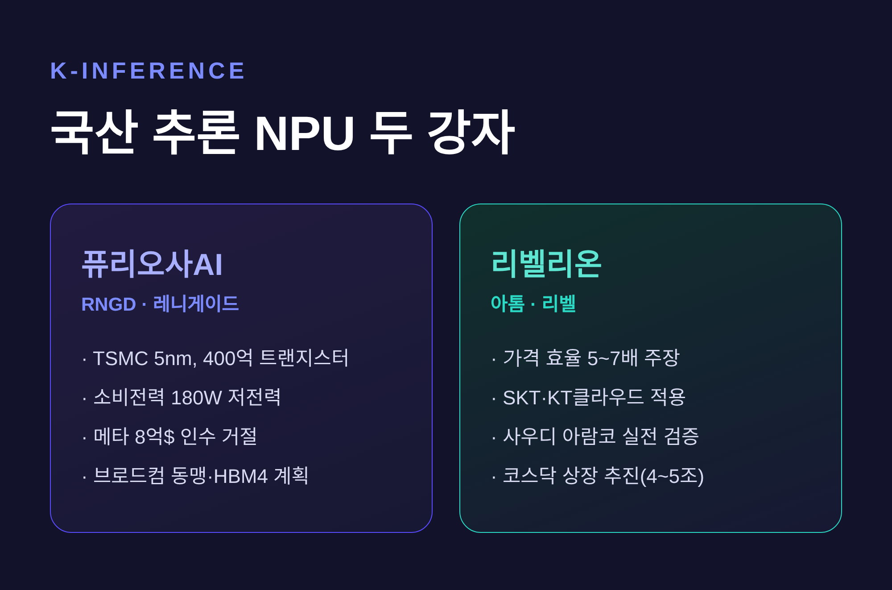

이번 글에서는 국산 AI 반도체가 '추론'이라는 새 전장에서 엔비디아에 맞설 수 있는지 정리해 보겠습니다. 퓨리오사AI와 리벨리온, 그리고 그 뒤를 받치는 HBM 메모리 이야기까지 한자리에 모았습니다.
먼저 결론부터 짧게 적습니다. 국산 NPU가 엔비디아를 통째로 대체하기는 어렵습니다. 다만 '추론'이라는 특정 영역에서는 분명한 틈이 열려 있습니다.

예전의 AI 경쟁은 '훈련'이 전부였습니다. 더 큰 모델을, 더 빠르게 학습시키는 싸움이었습니다. 지금은 다릅니다. 모델을 '만드는' 일보다 만든 모델을 '굴리는' 일, 즉 추론이 시장의 중심으로 들어왔습니다.
수요의 결이 바뀐 데에는 이유가 있습니다. 챗봇에 한 번 질문하던 시절과 달리, 요즘의 AI 에이전트는 스스로 여러 단계를 거쳐 일을 처리합니다. 이 과정에서 토큰 소비가 폭발합니다. 에이전트 하나가 단순 챗봇 질의보다 최대 1,000배 많은 토큰을 쓴다는 분석도 있습니다.
숫자로 보면 흐름이 더 또렷합니다. 골드만삭스는 월간 토큰 소비량이 2026년부터 2030년까지 24배 늘어날 것으로 봅니다. 추론 칩 시장 자체도 2024년 390억 달러에서 2030년 4,750억 달러 이상으로, 12배 넘게 커질 전망입니다.
추론은 한 번 띄우면 24시간 돌아갑니다. 그래서 평가의 잣대도 옮겨갔습니다. 예전엔 '초당 연산량'이었습니다. 지금은 '전성비'와 '총소유비용'입니다. 전기를 덜 먹고 같은 일을 해내는 칩 — 바로 이 지점이 국산 NPU가 노리는 자리입니다.

냉정하게 짚고 넘어가겠습니다. 엔비디아는 전 세계 AI 가속기 시장의 80% 이상을 쥐고 있습니다. CUDA라는 소프트웨어 생태계까지 더하면 벽은 더 높아집니다.
다만 GPU는 본래 훈련에 맞춰진 범용 칩입니다. 성능은 압도적이지만 전력을 많이 먹습니다. 고급 GPU는 700에서 1,000와트를 쓰기도 합니다. 데이터센터를 24시간 돌려야 하는 입장에서는, 이 전기료가 곧 비용입니다.
국산 NPU의 전략은 여기서 갈립니다. '모든 걸 잘하는 칩'을 만들지 않습니다. 추론이라는 한 가지 일을, 더 적은 전력으로 해내는 데 집중합니다. 물론 엔비디아도 가만있지 않습니다. 2025년 말 추론용 칩 설계사 그록과 대형 라이선스 계약을 맺으며 방어에 나섰습니다.

퓨리오사AI의 2세대 칩 이름은 RNGD입니다. '레니게이드', 우리말로 옮기면 '이단아' 정도가 됩니다. 이름값을 한 일화가 하나 있습니다. 2024년, 메타가 약 8억 달러에 인수를 제안했지만 거절했습니다. 가격이 문제가 아니라, 인수 뒤 사업 방향이 맞지 않았다는 이유였습니다. 독립 기업으로 크겠다는 선택이었습니다.
칩 자체도 결이 분명합니다. TSMC 5나노 공정에 약 400억 개의 트랜지스터를 담았고, SK하이닉스의 HBM3 메모리를 얹었습니다. 가장 눈에 띄는 건 전력입니다. 소비전력이 180와트에 그칩니다. 자체 테스트에서는 기존에 쓰던 GPU보다 와트당 추론 성능이 2.25배 나았다고 합니다.
전력이 낮다는 건 생각보다 큰 장점입니다. 칩 8개를 한 노드에 묶어도, 비싼 수랭 설비 없이 기존 공랭식 데이터센터에 그대로 꽂을 수 있습니다.
성과도 쌓이고 있습니다. LG AI연구원이 "실사용 성능이 우수하다"고 평가했고, 삼성SDS는 7월 이 칩을 얹은 서비스를 선보일 예정입니다. 2026년 5월에는 글로벌 반도체 기업 브로드컴과 손을 잡았습니다. 차세대 칩에는 HBM4까지 올린다는 계획입니다.
리벨리온은 삼성전자가 후원하는 곳으로, '한국판 엔비디아'라는 별명을 얻었습니다. 1세대 '아톰'에 이어 2세대 '리벨'을 준비 중이고, 칩 네 개를 칩렛 기술로 묶은 '리벨쿼드'도 갖췄습니다.
이 회사가 내세우는 숫자는 가격 효율입니다. 자체 벤치마크와 실환경에서 경쟁 시스템 대비 가격 효율이 5에서 7배 높다고 말합니다. 실제 쓰임새도 있습니다. SK텔레콤의 통화 녹음 요약 기능, KT클라우드의 NPU 서비스에 이미 들어가 있습니다.
국경 밖으로도 나가고 있습니다. 사우디아라비아 아람코와 데이터센터 랙 배송을 마치고, 상용화를 위한 실전 검증을 진행 중입니다.
자본 시장의 반응도 빠릅니다. 2026년 3월 IPO를 앞두고 4억 달러를 끌어모았고, 상반기 코스닥 상장을 목표로 절차에 들어갔습니다. 시장이 점치는 상장 후 기업가치는 4조에서 5조 원 수준입니다. 박성현 대표는 이렇게 말합니다. "추론으로의 전환이 역사상 가장 큰 칩 시장을 연다."

칩이 아무리 좋아도 메모리가 없으면 만들 수 없습니다. 지금 HBM은 그 자체로 전쟁터입니다.
상황이 만만치 않습니다. 골드만삭스는 2026년 D램 수급 격차를 "15년 만의 최악 부족"이라 표현했습니다. SK하이닉스는 2026년 HBM 생산 물량을 이미 전량 완판했고, 엔비디아 HBM 주문의 약 70%를 쥐고 있습니다.
여기서 국산 NPU는 묘한 위치에 섭니다. HBM을 안정적으로 확보해야 칩을 양산할 수 있는데, 그 HBM이 부족하고 비쌉니다. 든든한 뒷배이면서, 동시에 발목을 잡을 수 있는 변수인 셈입니다.
다행히 우리에게는 SK하이닉스와 삼성이라는 세계 1, 2위 메모리 회사가 있습니다. 정부도 가만있지 않습니다. K-클라우드 사업으로 국산 NPU와 데이터센터를 묶고 있고, 2026년 3분기에는 국가 AI컴퓨팅센터 착공이 예정돼 있습니다.
정리하면 이렇습니다.
국산 AI 반도체가 엔비디아를 단숨에 무너뜨리는 그림은, 솔직히 아직 멀었습니다. 훈련 영역의 범용성, CUDA 생태계, 압도적인 물량 — 이 격차는 분명합니다.
그러나 질문을 바꿔보면 답도 달라집니다. "엔비디아를 대체할 수 있는가"가 아니라 "추론이라는 새 시장에서 자리를 잡을 수 있는가"라면, 이야기는 충분히 해볼 만합니다. 전성비, 가격 효율, 그리고 저전력이라는 무기는 추론의 시대와 결이 맞습니다.
— 대항마는 '엔비디아를 이기는 칩'이 아니라, '엔비디아가 굳이 안 가는 자리를 먼저 채우는 칩'일지도 모릅니다.
대항마가 가능하겠냐고 물으신다면, 적어도 추론이라는 한 칸에서는 그렇다고 답하겠습니다.